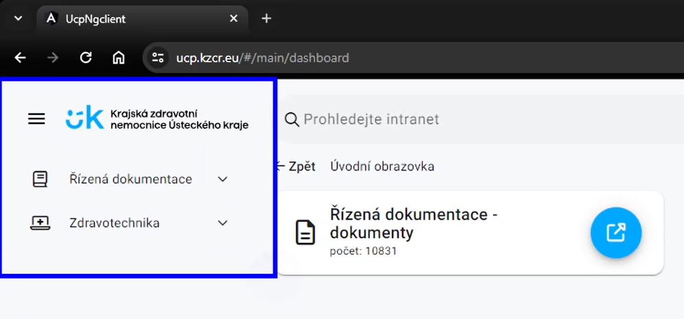
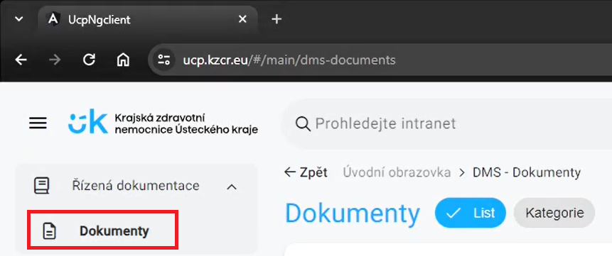
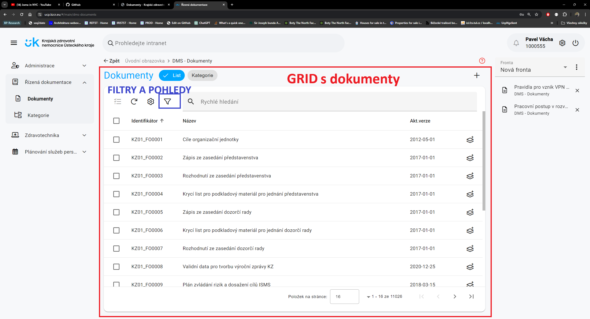
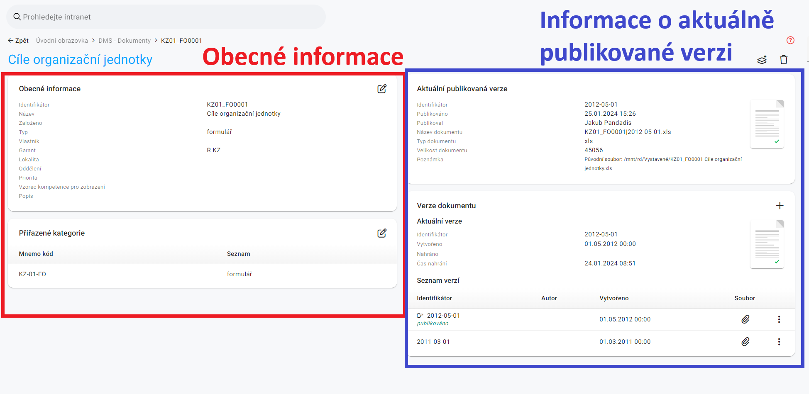
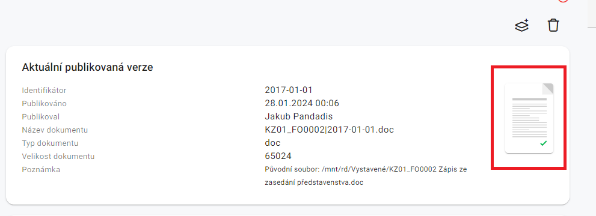
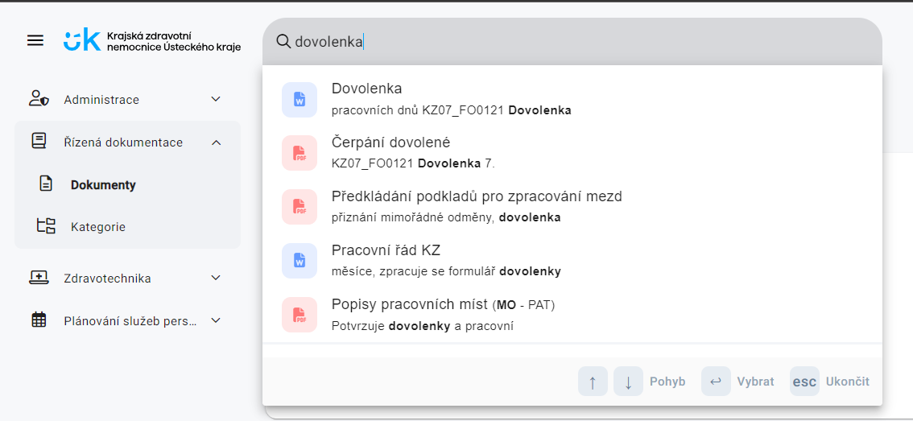
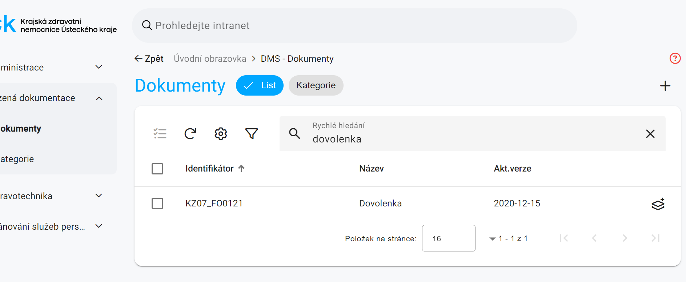
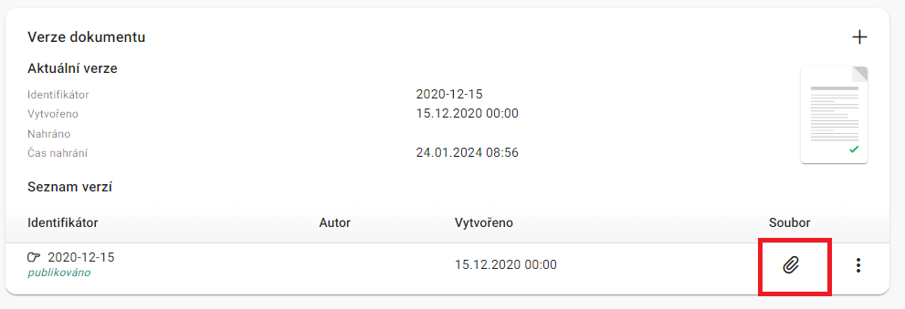

Dokumenty
Jak se do sekce Dokumenty dostanu?
Po přihlášení se vám zobrazí základní nabídka. V levé straně uvidíte základní menu, ve kterém bude záložka "Řízená dokumentace". Toto lévé základní menu zůstavá po celou dobu práce v UCP viditelné.

- Klikněte na záložku "Řízená dokumentace" v menu.
- Rozbalí se Vám na stejném místě další nabídka.
- V rozbalené nabídce vyberte položku "Dokumenty".

Po kliknutí se dostanete na základní zobrazení řízené dokumentace. Ta obsahuje takzvaný grid neboli hlavní zobrazovací plochu, ve které najdete již samotné záznamy s dokumenty.

Detail dokumentu
Po nalezení hledaného dokumentu a následném kliknutí na položku v seznamu se dostanete do detailu dokumentu.
Hlavní zobrazovací plocha se skládá ze dvou částí. Část vlevo popisuje obecné informace o dokumentu. Část vpravo popisuje poslední aktuální publikovaný dokument spolu s přílohou, datumem publikace a cestou k dokumentu a jeho typ. Vpravé části lze také nalézt seznam všech verzí, ve které se dokument nacházel.

Aktuální publikovaná verze dokumentu
V detailu položky najdete v poli Aktuální publikovaná verze detailní informace o právě platném vystaveném dokumentu. Kliknutím na ikonu s přílohou se dokument buď v případě, že se jedná o pdf formát rovnou otevře nebo bude stažen na lokální disk, kde si jej můžete pomocí příslušného programu otevřít.

Hledání konkrétního dokumentu
Pokud znáte část názvu nebo identifikační číslo dokumentu, existují dvě možnosti. "Prohledávání skrz intranet" a "Rychlé vyhledávání v seznamu". První z možností prohledává mimo řízené dokumentace i v dokumentech pro zdravotechniku či pasportizaci. Rychlé vyhledávání vyhledává pouze v řízené dokumentaci.
Prohledávání skrz intranet
V horní části okna je vyhledávací pole s textem "Prohledejte intranet". Pro vyhledání dokumentu je postup následující:
- Zadejte do vyhledávacího pole hledaný výraz.
- Zobrazil se vám seznam s dokumenty.
- Dokument vyberte kliknutím.

Rychlé vyhledávání v seznamu
Pole pro rychlé vyhledávání se nachází v seznamu dokumentů po kliknutí na záložku "Dokumenty".
- Zadejte do vyhledávacího pole hledaný výraz.
- Stiskněte klávesu Enter.
- Zobrazil se vám seznam s dokumenty.
- Dokument vyberte kliknutím.

Rychlé vyhledávání vs. filtrace dokumentů
Rychlé vyhledávání umožňuje rychlý přístup k dokumentům na základě jejich názvu nebo identifikačního čísla. Filtrace poskytuje pokročilejší možnosti vyhledávání, jako je filtrování podle různých kritérií jako jsou oddělení nebo lokalita.
V případě nejasností při práci s filtry využijte návod pro filtry a pohledy.
Stáhnutí starší verze dokumentu
V detailu dokumentu klikněte na ikonku spony. Dokument se sám stáhne.
